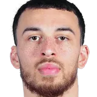

Played 2 seasons for 3 teams; his teams went 20–29 in his games.
Final NBA finish, season by season
Title Finals Other playoffs Missed the playoffs. #1 = champion; the dashed line is last place that season. Each point opens that season's final standings.
All 30 teams ranked in 2020-21, his best finish (#7)Teammate help
 Kyrie Irving3.01 season
Kyrie Irving3.01 season James Harden1.01 season
James Harden1.01 season Kevin Durant1.01 season
Kevin Durant1.01 season
Career
Regular seasons 1946-47 to 2026-27, games through Nov. 17, 2026. Records include 2026-27 to date; season counts and finishes use completed seasons. Each card opens its board. How we count.
Latest completed seasons
Season by season
Newest first; every header sorts. Final NBA finish is the team's rank among all teams that season (#1 = champion) and opens that season's standings. "Without him" uses the team-season window; the span line counts only the games between his first and last game for the team.
| 2020-21 | #7 of 30 | 48–24 66.7% | Lost conf semis 3–4 | 13 of 72 | 9–4 69.2% | 39–20 66.1%span: N/A, gap N/A | +3.1 | |
| 2017-18 | #30 of 30 | 21–61 25.6% | Missed the playoffs | 32 of 82 | 10–22 31.2% | 7–12 36.8%span: 1–0, gap −68.8 | −5.6 | |
| 2017-18 | #7 of 30 | 48–34 58.5% | Lost conf semis 1–4 | 4 of 82 | 1–3 25.0% | 32–15 68.1%span: N/A, gap N/A | −43.1 |
On/off, starts and close games
From the lineup data, 1996-97 on. On/off is net points per 100 possessions with him on the floor minus off, a different unit from the win-rate gaps. Started and off the bench are team records in those games; close games are those within 5 points in the last 5 minutes with him on the floor.
| 2020-21 | −4.1 | 1–0 100.0% | 8–4 66.7% | 1–0 100.0% | |
| 2017-18 | +9.8 | 4–6 40.0% | 6–16 27.3% | 4–5 44.4% | |
| 2017-18 | −24.8 | N/A | 1–3 25.0% | N/A |
Teammate help by season
Help = Teammates Score points for honors won that season by teammates who shared a game with him. How help works.
- 2020-21
 Brooklyn
Kyrie Irving All-NBA 3rdAll-Star11 gJames Harden All-Star2 gKevin Durant All-Star11 g
Brooklyn
Kyrie Irving All-NBA 3rdAll-Star11 gJames Harden All-Star2 gKevin Durant All-Star11 g
More: last season's honors and other teammates
Help coming in (teammates' honors the season before): 5.0
Other teammates (no honors that season): Blake Griffin 13 g, Jeff Green 13 g, Landry Shamet 13 g, Joe Harris 10 g, Bruce Brown 10 g, Tyler Johnson 8 g, Nicolas Claxton 7 g, DeAndre Jordan 6 g, Alize Johnson 6 g, Timothe Luwawu 6 g, Reggie Perry 5 g
- 2017-18
 Phoenix
Phoenix
 Josh Jackson All-Rookie 2nd32 g
Josh Jackson All-Rookie 2nd32 g
More: last season's honors and other teammates
Help coming in (teammates' honors the season before): 0.1 · from Marquese Chriss (0.1)
Other teammates (no honors that season): TJ Warren 32 g, Troy Daniels 32 g, Marquese Chriss 32 g, Dragan Bender 32 g, Tyler Ulis 31 g, Alex Len 27 g, Devin Booker 25 g, Tyson Chandler 23 g, Jared Dudley 13 g, Greg Monroe 12 g, Derrick Jones 6 g, Danuel House 4 g, Eric Bledsoe 3 g, Isaiah Canaan 2 g and 1 more
- 2017-18
 New Orleans
New Orleans
 Anthony Davis All-NBA 1stAll-StarAll-Def 1st4 g
Anthony Davis All-NBA 1stAll-StarAll-Def 1st4 g Jrue Holiday All-Def 1st4 g
Jrue Holiday All-Def 1st4 g
More: last season's honors and other teammates
Help coming in (teammates' honors the season before): 6.0
Other teammates (no honors that season): Ian Clark 4 g, Darius Miller 4 g, E'Twaun Moore 4 g, Rajon Rondo 4 g, Cheick Diallo 4 g, Dante Cunningham 3 g, Nikola Mirotic 2 g, Jameer Nelson 1 g, Emeka Okafor 1 g, DeAndre Liggins 1 g, Omer Asik 1 g, Charles Cooke 1 g
Compare with a peer
Suggested peers need 300+ career games. Pick anyone below.
Record against each opponent
Regular season, completed seasons: 49 games, 20–29, against 26 franchises. Grouped by franchise (named as today); game lists keep each team's name that season.
| Games list | |||||||
|---|---|---|---|---|---|---|---|
| 4 | 4–0 | 100.0% | +4 | N/A | 2017-18 to 2020-21 | ||
| 3 | 1–2 | 33.3% | −1 | N/A | 2017-18 | ||
| 3 | 0–3 | 0.0% | −3 | 0–1 (3–3 in games) | 2017-18 to 2020-21 | ||
| 3 | 1–2 | 33.3% | −1 | N/A | 2017-18 | ||
| 3 | 0–3 | 0.0% | −3 | N/A | 2017-18 to 2020-21 | ||
| 3 | 1–2 | 33.3% | −1 | N/A | 2017-18 | ||
| 3 | 1–2 | 33.3% | −1 | N/A | 2017-18 to 2020-21 | ||
| 3 | 1–2 | 33.3% | −1 | N/A | 2017-18 to 2020-21 | ||
| 2 | 1–1 | 50.0% | 0 | 1–0 (3–0 in games) | 2017-18 to 2020-21 | ||
| 2 | 1–1 | 50.0% | 0 | N/A | 2017-18 | ||
| 2 | 1–1 | 50.0% | 0 | N/A | 2017-18 to 2020-21 | ||
| 2 | 0–2 | 0.0% | −2 | N/A | 2017-18 | ||
| 2 | 1–1 | 50.0% | 0 | N/A | 2017-18 | ||
| 2 | 1–1 | 50.0% | 0 | N/A | 2017-18 | ||
| 1 | 1–0 | 100.0% | +1 | N/A | 2020-21 | ||
| 1 | 1–0 | 100.0% | +1 | N/A | 2020-21 | ||
| 1 | 0–1 | 0.0% | −1 | N/A | 2017-18 | ||
| 1 | 0–1 | 0.0% | −1 | N/A | 2017-18 | ||
| 1 | 1–0 | 100.0% | +1 | N/A | 2020-21 | ||
| 1 | 0–1 | 0.0% | −1 | N/A | 2017-18 | ||
| 1 | 0–1 | 0.0% | −1 | N/A | 2017-18 | ||
| 1 | 0–1 | 0.0% | −1 | N/A | 2017-18 | ||
| 1 | 1–0 | 100.0% | +1 | N/A | 2017-18 | ||
| 1 | 0–1 | 0.0% | −1 | N/A | 2017-18 | ||
| 1 | 1–0 | 100.0% | +1 | N/A | 2017-18 | ||
| 1 | 1–0 | 100.0% | +1 | N/A | 2020-21 |
Rows add up to his career record in his games. A playoff series counts when he played in it; early round-robin games show as games only. How we count.
Playoffs, with and without him
Arrival and departure
Team wins per 82 games the season before he arrived vs his first season there, and his last season vs the season after he left. Per 82 so short seasons compare fairly. These are team records, not a measure of what he did.
| Left | 2021-22 | 2020-21: 48–24 54.7 per 82 | 2021-22: 44–38 44.0 per 82 | −10.7 wins | |
| Arrived | 2020-21 | 2019-20: 35–37 39.9 per 82 | 2020-21: 48–24 54.7 per 82 | +14.8 wins | |
| Left | 2018-19 | 2017-18: 21–61 21.0 per 82 | 2018-19: 19–63 19.0 per 82 | −2.0 wins | |
| Left | 2018-19 | 2017-18: 48–34 48.0 per 82 | 2018-19: 33–49 33.0 per 82 | −15.0 wins | |
| Arrived | 2017-18 | 2016-17: 24–58 24.0 per 82 | 2017-18: 21–61 21.0 per 82 | −3.0 wins | |
| Arrived | 2017-18 | 2016-17: 34–48 34.0 per 82 | 2017-18: 48–34 48.0 per 82 | +14.0 wins |
Seasons split between teams
Each team's record before his first game for it, inside his window (games with and without him) and after his last game, in the seasons he played for two or more teams.
| 2017-18 | Oct. 18, 2017 to Dec. 20, 2017 | N/A | 17–34 33.3% | 4–27 12.9% | 32 | |
| 2017-18 | Jan. 30, 2018 to Feb. 5, 2018 | 15–16 48.4% | 33–18 64.7% | N/A | 4 |